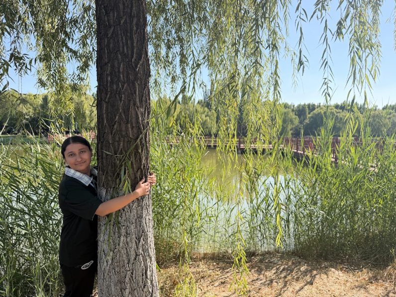

Name: Lanxi
Role: Designer
Hello! My name is Lanxi. I am the designer in my group. I mainly work on the visual design and creative parts of our project.
As the designer of the group, I am responsible for creating and developing the visual style of our project.
I designed the logo for our group project and worked on how the characters should look together as a logo.
I worked on the appearance of our characters. I decided ideas such as how old the characters should look, their height, clothes, hairstyle, and overall appearance. I also tried to make the characters match our Odyssey theme.
I searched Pinterest for design inspiration, especially for character ideas, Greek-style clothing, colours, illustrations and other visual ideas that could fit our project.
I also helped choose the colour palette for our website. I looked for colours that matched our presentation and the movie The Odyssey. I wanted the colours to give the website a Mediterranean and ancient Greek feeling.
I also worked on the PowerPoint presentation together with another team member. We discussed the design and arranged the content and visuals for our presentation.
My main inspiration comes from ancient Greek and Mediterranean styles. I used ideas from The Odyssey, Greek clothing, architecture, mythology and different visual references from Pinterest to develop our project design.
Through this project, I learned how to work with other team members and turn our ideas into visual designs. I also learned more about choosing colours, designing characters and creating a consistent visual style for a project.